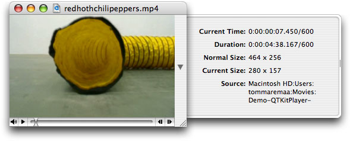

Adding New Capabilities to the QTKitPlayer Application
In this chapter, you’ll extend the QTKitPlayer application beyond what you have constructed in the previous chapter. You’ll add an NSDrawer object to the QTMovieView window, which toggles open and close with the click of a mouse. The drawer will also have new, enhanced functionality, including the capability of displaying a movie’s current time and duration, its normal and current size, and its source.
Notably, as you work through the steps outlined in this chapter and add new chunks of code to your Xcode project, you’ll implement a callback mechanism from the QuickTime C API.
When you’ve completed your Xcode project, you’ll be able to choose File > New in your extended QTKitPlayer and an untitled QuickTime movie with a black screen will open for you. If you click the button in the middle of the frame to the right, as shown in Figure 4-1, a Cocoa drawer pops open.
The button in the movie frame lets you toggle the drawer open and closed, with fields of useful information about the movie being displayed. The information displayed, however, is not static.
By implementing a callback mechanism from the QuickTime C API, your QTKitPlayer will be able to synchronize the current time to the playback of the movie itself.
When a QuickTime movie plays, for example, the current time field is updated synchronously with the movie, as illustrated in Figure 4-2.
Figure 4-2 An mp4 QuickTime movie playing with the current time, duration, movie size, and movie displayed in the open Cocoa drawer
In this section:
Design Strategy
Tasks to Accomplish
Adding a Cocoa Drawer to the QTKitPlayer
Adding Code To Your QTKitPlayer Project
The Completed Project
Design Strategy
Building on the existing functionality of your QTKitPlayer application, you’ll add new text fields to your NSDrawer object that provide information about the size of the movie playing, its source path on the user’s computer, as well as the time and duration of play. These new fields may serve to enhance the user’s ability, for example, to edit a QuickTime movie with a specific timeline, or to resize a movie to a particular pixel ratio. The location of the source movie may also be useful.
Because you are adding to the existing QTKitPlayer application, all the functionality of the player is still intact. All the controls for movie playback are available for starting and stopping, showing and hiding the controller, stepping forward and backward frame by frame, and so on.
This chapter depends on your having worked through the construction of the QTKitPlayer application in the previous chapter. If you haven’t studied the steps described in that chapter, or simply skimmed over them, it might be a good idea to go back there first and refresh your memory before proceeding.
In this, as well as in the following chapters, you’ll break down the tasks you need to accomplish into a series of discrete steps. The goal is to work as efficiently as possible by first laying the foundation for your enhanced player application in Interface Builder, and then adding the code you need to make it work.
Tasks to Accomplish
The tasks you want to accomplish in adding new functionality to your QTKitPlayer application are straightforward enough if you have already developed projects with Cocoa and Xcode. You’ll do this:
Add a new Cocoa NSDrawer object to your project, using the tools available to you in Interface Builder and Xcode 2.0. The goal is for the user to be able to toggle the drawer open and closed, and for the drawer object to have the necessary logic to display and synchronously update the movie content as it plays.
Add a small chunk of code to the
MovieDocument.hclass interface to specify the movie attributes of the drawer.Add a larger chunk of code to your
MovieDocument.mimplementation file. This will involve working with a callback mechanism from the QuickTime C API. The goal is to learn how you can tap into the rich library of the QuickTime C API, when you want to add specific functionality to your Cocoa project that may not be available, for whatever reason, in the Cocoa API.
Project Complexity
The complexity of the project comes with the addition of a callback mechanism from the QuickTime C API.
Basically, as the movie is playing, you need a mechanism to update the timer field in the drawer. The movie controller component calls your action filter function each time the component receives an action for its movie controller. In your action filter, you will use the idle action (mcActionIdle) to update your time display. The idle action is sent continuously while the movie is being serviced.
You could do a similar thing with an NSTimer, but the action filter technique is a bit easier to implement.
The function prototype for the QuickTime C callback mechanism is defined as follows:
Boolean MyMCActionFilterWithRefConProc |
( MovieController mc, |
short action, |
void *params, |
long refCon ); |
The MyMCActionFilterWithRefConProc function responds to the actions of a movie controller with a reference constant. The parameters specify the movie controller (mc) for the operation, the movie controller action (action), a pointer to a structure that passes information to the callback, and a reference constant (refCon) that your code supplies to your callback. Your QTKitPlayer application can invoke these actions by calling MCDoAction. An action filter function will receive any of the controller actions sent to it.
You’ll add this callback to the code in your MovieDocument.m implementation file. The way to accomplish this is explained in detail in the section “Adding Code To Make the Drawer Work.”
Class Model
When you’ve completed all these tasks, you’ll see the class model of your QTKitPlayer code in Xcode 2.0, as shown in Figure 4-3. The class model includes a list of the MovieDocument instance variables you’ll add to your QTKitPlayer project and a visualization of their connections and inheritance paths.
Note that this class model diagram is only available using Xcode 2.0. As illustrated in Figure 4-3, it also lists the classes you’ll work with in subsequent chapters of this programming tutorial. Just ignore these for the moment, as you focus on the properties you’ll add to the MovieDocument class.
Adding a Cocoa Drawer to the QTKitPlayer
In this sequence of steps, you’ll add a Cocoa drawer to the QTKitPlayer. Adding drawers to a window is relatively easy to accomplish using Interface Builder.
To extend your QTKitPlayer, follow these steps:
Launch Interface Builder 2.5 and open your MovieDocument.nib.
Drag the drawer object from your Cocoa-Windows palette into your nib, shown in Figure 4-4. The drawer object becomes an NSDrawer in your nib.
To add the drawer content view, drag a CustomView object from the Cocoa-Containers palette into the nib. Double-click the icon and rename it as “Drawer ContentView”. That gives you the content view, as shown in Figure 4-5.
Add the
mDraweroutlet to File’s Owner. Double-click the File’s Owner icon. This brings up the Attributes pane for the MovieDocument Info window. Click Add to add anmDraweroutlet.Wire up the connection from the File’s Owner to the
mDraweroutlet. Click File’s Owner, press the Control key, and drag wire to the NSDrawer icon in the MovieDocument.nib. Click connect.Now you want to select the NSDrawer object in your nib and press Command-2 to open the NSDrawer Info pane. Select the NSDrawer icon and press the Control key. Now Control-drag to the Drawer Content View icon and press the Connect button in the NSDrawerInfo window, as shown in Figure 4-6. You want to wire up your connections from the NSDrawer object to the Drawer Content View object.
Similarly, select the NSDrawer icon and press the Control key. Now control-drag to the window icon to wire up your connections from the NSDrawer object to its parent window.
In the MovieDocument.nib, double-click the window icon to select the QTMovieView window object. You want to leave a portion of the window available for the button that will toggle your NSDrawer object open and closed.
Select the Cocoa-Controls palette and drag an NSButton object from the collections of control object to the right portion of your window.
Press Command-1 to open the Attributes pane, as shown in Figure 4-7.
Specify the Type as Disclosure in the attributes pane of NSButton Info (Figure 4-7). This enables the button to toggle. The toggle option is available in Cocoa by enabling disclosure.
Set the springs for the disclosure button.
Click the NSDrawer icon, then set the Size attributes in the NSDrawer Info pane, as shown in Figure 4-8.
Now you want to set the springs in the Size attribute pane so that when the user resizes the drawer, the toggle button is not crunched. Set the springs for autosizing, as shown in Figure 4-9.
Add NSTextField objects corresponding to “Current Time,” “Duration,” “Normal Size,” “Current Size,” and “Source” (all static text), as shown in Figure 4-10. In the attributes pane of each text field, specify the title, color, alignment, text border, and other information.
You want to be sure that you specify in the NSTextfield Info panes for Current Time and Duration by entering the Title attribute as 00:00:00:00, as shown in Figure 4-10.
Now add the outlets to your document subclass. Double-click the File’s Owner icon. This brings up the Info window attributes pane for the MovieDocument class. Use the Add button and add the following outlets:
mCurrentSize,mDuration,mNormalSize,mSourceSize, andmTimeDisplay.Now you are ready to hook up the File’s Owner to the various textfields that you have specified in the Drawer Content View. Select the File’s Owner icon and press the Control key. Connect the wire to each textfield in the Drawer Content View, as shown in Figure 4-11 and click Connect for each outlet.
Add toggle drawer action to the MovieDocument class. Double-click File’s Owner, and in the Attributes pane of the Info window for the MovieDocument, click the “O Actions” pane. Now click the Add button, and add a
toggleDraweraction.Wire up the disclosure button to the
toggleDraweraction. Click the disclosure button in the MovieDocument window. Press the Control key, then drag the wire to the File Owner’s icon. In the Connections pane of the Info window for NSButton, click the Target/Action pane. Select thetoggleDraweraction and click the Connect button, as shown in Figure 4-12.
This completes the steps you need to follow in order to construct the Cocoa drawer and hook up the outlets and actions in Interface Builder.
Adding Code To Your QTKitPlayer Project
In this section, you’ll add less than one hundred lines of code to your QTKitPlayer project by modifying your MovieDocument.h and MovieDocument.m class files.
Adding Code To The Movie Document Class
In this next sequence of steps, you’ll be adding a small amount of code to your MovieDocument.h class interface file. You want to declare the instance variables that you have specified as your outlets and target actions in Interface Builder. You also want to define in code the methods that will enable you to set these variables.
To begin, open the MovieDocument.h declaration file in your Xcode project. Follow these steps to add to your existing code in the file:
Insert the following line of code in the
@interfacedirective block after your export outlet declarations. This enables you to specify the movie attributes for your NSDrawer object:IBOutlet NSDrawer *mDrawer;
Add the following code (also in the
@interfaceblock) to specify the drawer elements for your movie attributes:IBOutlet NSTextField *mCurrentSize;
IBOutlet NSTextField *mDuration;
IBOutlet NSTextField *mNormalSize;
IBOutlet NSTextField *mSourceName;
IBOutlet NSTextField *mTimeDisplay;
Define a getter for your drawer with the following line of code:
- (id)drawer;
Add to your IBActions to toggle the drawer open and closed, with the following line of code:
- (IBAction)toggleDrawer:(id)sender;
Insert the following methods before the
@enddirective in the file:- (void)setDurationDisplay;
- (void)setNormalSizeDisplay;
- (void)setCurrentSizeDisplay;
- (void)setSource:(NSString *)name;
- (void)setTimeDisplay;
Add these two methods to install and remove the movie callback before the
@enddirective in the file:-(void)removeMovieIdleCallback;
-(void)installMovieIdleCallback;
Adding Code To Make the Drawer Work
In this next sequence of steps, you’ll be adding a larger chunk of code to your MovieDocument.m implementation file.
To begin, open the MovieDocument.m file in your Xcode project. You’ll add the following blocks of code to your file. Just follow these steps:
After your import and
#definestatements, add this line of C code to set your timer display. You pass your movie document in therefconparameter and that gives you a way to call thesetTimeDisplay:method. This is the function prototype you add:pascal Boolean MyActionFilter (MovieController mc, short action, void* params, long refCon);
As the movie is being serviced by QuickTime, the movie controller component calls your action filter procedure each time the component receives an action for its movie controller. You use the idle action in your filter procedure to update your timer display.
Next, you want to add these initializations for your movie drawer items. Insert these lines:
-(void)awakeFromNib
{// initialize movie drawer items
[self setDurationDisplay];
[self setNormalSizeDisplay];
[self setCurrentSizeDisplay];
[self setSource:[self fileName]];
}
You want to return the
mDrawerinstance variable. Insert these lines before you add your setters, in a block identified as Getters:- (id)drawer
{return mDrawer;
}
Now you want to add the following block of code, which enables you to read the movie. This is also where you install the movie action callback. Add these lines:
- (BOOL)readFromFile:(NSString *)fileName ofType:(NSString *)type
{BOOLsuccess = NO;
// read the movie
if ([QTMovie canInitWithFile:fileName])
{if ([type isEqualTo:@"MovieDocumentData"])
{NSData*data = [NSData dataWithContentsOfFile:fileName];
[self setMovie:[QTMovie movieWithData:data error:nil]];
}
else
{[self setMovie:((QTMovie *)[QTMovie movieWithFile:fileName error:nil])];
}
success = (mMovie != nil);
if (success)
{[self installMovieIdleCallback];
}
}
return success;
}
Next, you need to install a movie controller action filter. If the movie is successfully created, the callback is installed. To get the controller from the movie and set the movie control filter, add this block of code:
-(void)installMovieIdleCallback
{ComponentResult cr = noErr;
MovieController mc = [mMovie quickTimeMovieController];
if (!mc) goto bail;
MCActionFilterWithRefConUPP upp = NewMCActionFilterWithRefConUPP(MyActionFilter);
if (!upp) goto bail;
cr = MCSetActionFilterWithRefCon(mc, upp, (long)self);
DisposeMCActionFilterWithRefConUPP(upp);
bail:
return;
}
When the movie is closed, you remove the existing callback by passing
NILfor the callback parameter. Add these lines of code:-(void)removeMovieIdleCallback
{[MCSetActionFilterWithRefCon([mMovie quickTimeMovieController],
nil,
(long)self);
}
Insert the following code to toggle the drawer state:
- (IBAction)toggleDrawer:(id)sender
{[mDrawer toggle:sender];
In the next sequence of steps (8-12), you add these chunks of code to the fields in the drawer. To set the current time text field, insert this chunk of code:
- (void)setTimeDisplay
{if (mMovie)
{QTTime currentPlayTime = [[mMovie attributeForKey:QTMovieCurrentTimeAttribute] QTTimeValue];
[mTimeDisplay setStringValue:QTStringFromTime(currentPlayTime)];
}
}
To set the duration text field, insert this chunk of code:
- (void)setDurationDisplay
{if (mMovie)
{[mDuration setStringValue:QTStringFromTime([mMovie duration])];
}
}
To set the normal size text field, add this:
- (void)setNormalSizeDisplay
{NSMutableString *sizeString = [NSMutableString string];
NSSize movSize = NSMakeSize(0,0);
movSize = [[mMovie attributeForKey:QTMovieNaturalSizeAttribute] sizeValue];
[sizeString appendFormat:@"%.0f", movSize.width];
[sizeString appendString:@" x "];
[sizeString appendFormat:@"%.0f", movSize.height];
[mNormalSize setStringValue:sizeString];
}
To set the current size text field, add:
- (void)setCurrentSizeDisplay
{NSSize movCurrentSize = NSMakeSize(0,0);
movCurrentSize = [[mMovie attributeForKey:QTMovieCurrentSizeAttribute] sizeValue];
NSMutableString *sizeString = [NSMutableString string];
if (mMovie && [mMovieView isControllerVisible])
movCurrentSize.height -= [mMovieView controllerBarHeight];
[sizeString appendFormat:@"%.0f", movCurrentSize.width];
[sizeString appendString:@" x "];
[sizeString appendFormat:@"%.0f", movCurrentSize.height];
[mCurrentSize setStringValue:sizeString];
}
To set the source text field, add:
- (void)setSource:(NSString *)name
{NSArray *pathComponents = [[NSFileManager defaultManager] componentsToDisplayForPath:name];
NSEnumerator *pathEnumerator = [pathComponents objectEnumerator];
NSString *component = [pathEnumerator nextObject];
NSMutableString *displayablePath = [NSMutableString string];
while (component != nil) {if ([component length] > 0) {[displayablePath appendString:component];
component = [pathEnumerator nextObject];
if (component != nil)
[displayablePath appendString:@":"];
} else {component = [pathEnumerator nextObject];
}
}
[mSourceName setStringValue:displayablePath];
}
After the
@end directive, you add this chunk of code to intercept some actions for the movie controller and to update the current time display in the drawer. Note that therefConparameter is a documentid:pascal Boolean MyActionFilter (MovieController mc, short action, void* params, long refCon)
{MovieDocument *doc = (MovieDocument *)refCon;
switch (action)
{// handle idle events
case mcActionIdle:
// update the current time display in the info drawer
if ([[doc drawer] state] != NSDrawerClosedState)
[doc setTimeDisplay];
break;
}
return false;
}
This wraps up the additions to the code you need to make in your MovieDocument implementation file. You’re now ready to build and compile your Xcode project.
The Completed Project
If you’ve followed the steps outlined in this chapter, you’ll have successfully extended the QTKitPlayer application with a Cocoa drawer you can toggle open and closed. The drawer will display and update the time of any QuickTime movie you want to play.
You can control movie playback as you have before, with QTKitPlayer functionality still in place for movie control, as shown in Figure 4-13.
In a short series of steps, you’ve significantly extended the capabilities of your QTKitKPlayer application. Now you’re ready to enhance the media player by adding the capability to stream audio and video. That’s explained in the next chapter.
© 2004, 2005 Apple Computer, Inc. All Rights Reserved. (Last updated: 2005-11-09)